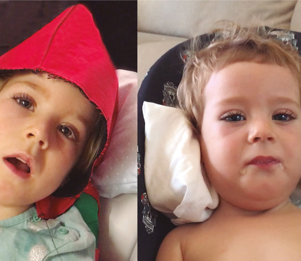

Parque Científico y Tecnológico de Gipuzkoa,
Paseo Mikeletegi 83,
20009 San Sebastián,
Spain
Parque Científico y Tecnológico de Gipuzkoa,
Paseo Mikeletegi 83,
20009 San Sebastián,
Spain Email:
Email:
 Tel:
Tel:
Discover some of the stories of patients with genetic diseases whose lives have changed thanks to the
contribution of Fundación Columbus, Columbus Children’s Foundation and Viralgen.
Meet the children
Meet Irai
The girl who was born twice
Irai is one of the 150 patients affected worldwide by Aromatic Amino Acid Decarboxylase deficiency –AADC deficiency– also known as juvenile Parkinson's. A disease that, until now, had no cure. However, gene therapy is changing the history.
The first birth
Irai was born on the 16th of July 2014. Although it seemed normal during the first weeks, it soon became obvious that something was wrong.
A year after her birth, a diagnosis was made. She suffered from an ultra-rare disease known as juvenile Parkinson's.
This deficiency causes the brain to seem disconnected from the body, keeping it from moving, holding the head up or speaking, among other symptoms.
"Imagine what went through our heads -her father said Irai wouldn’t ever be able to talk, walk, and would probably have to wear a gastric button to allow her to eat... and there was no cure".
Everyday life
Everyday life with Irai was extremely difficult. She barely slept for three hours. When she was awake, her constant pain caused her permanent wailing.
She suffered crises in which her eyes looked up, stiffened herself and emitted groans that made her great pain evident. Then she was exhausted.
Hopping she would achieve some improvement, they treated her, first, in the Hospital de Barcelona and then in a specialized center in Alicante, where some improvements were obtained, but just it.
Taken by surprise
The phone rings. A friendly stranger tells them options they simply cannot believe.
The President of Fundación Columbus, talks to them about gene therapy, the successes they were having with juvenile Parkinson's and -what was most stunning- they found the way to introduce the gene into Irai which could cure her.
On February of 2019 Fundación Columbus informed them that Professor Krystof Bankiewicz, Professor and Director of the Brain Health Department at The Ohio State University and one of the world’s leading experts in juvenile Parkinson's, would treat Irai.
The second birth
On 14th of May 2019, in Varsovia's Brodno Hospital, Professor Krystof Bankiewicz and his team performanced a highly complex gene therapy surgery.
Definetly it was a success. From then on, Irai's brain would be able to create neurotransmitters that would restore the connection between her brain and her body.
Gene therapy, Columbus Children's Foundation and Fundación Columbus with the support of Viralgen, are achieving what just a few years ago seemed like a miracle. Now, children and their families, like Irai's one, hope for a "second birth".
Let’s talk
Do you want to know more about how we can help you?